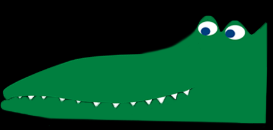
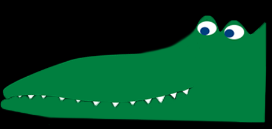
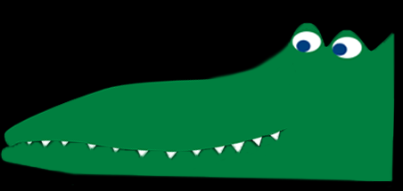

Move the mouse up and down to control the paddle. Click to throw the ball. Your paddle must be inside the blue box to throw the ball.
You have 15 chances to get the ball into the croc's mouth. Aim for the tip of the tongue. Your points will be tallied in the bottom left hand corner of the screen.
{% endblock %} {% block gamefield %}
